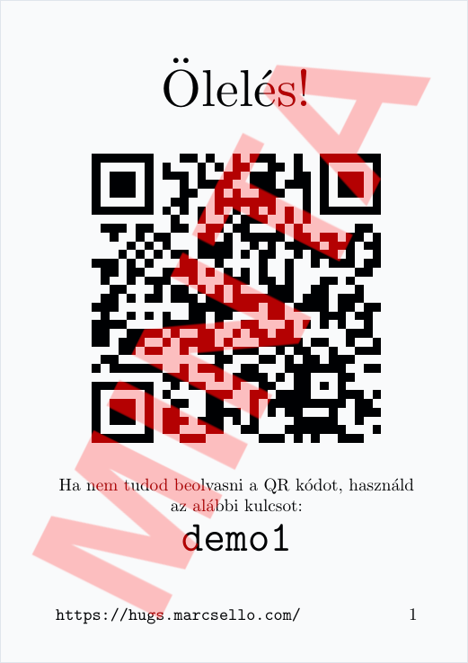
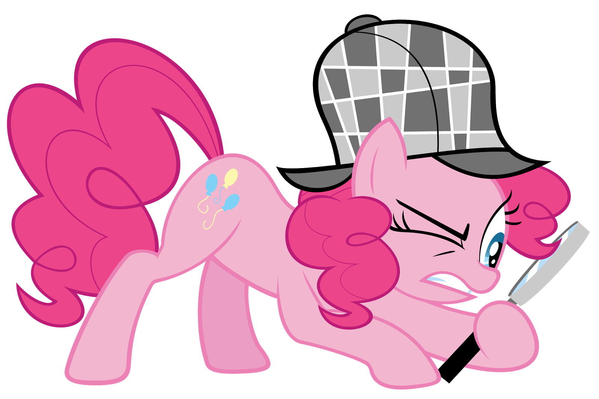

Először is engedd meg, hogy köszöntselek a 2019-es Brony pikniken. Továbbá nagy megtiszteltetés nekem, hogy kipróbálod ezt a kis játékot. Remélem jól fogsz szórakozni!
A piknik környékén megbújik Xdb kártya. A feladatod az, hogy ezeket felkutasd, és megölelgesd a pónikat akit rejtenek. A kártyák valahogy így fognak kinézni:  Ha találtál egyet, akkor nincs más dolgot, mint beolvasni a rajta található QR kódot.
A kártyákon a QR kód mellett egy kulcsot is találtok. Ha valami miatt a QR kódot nem tudjátok beolvasni, akkor ezt a kulcsot beütve is meg tudjátok ölelni a talált pónit.
Fontos: a kártyákat minden esetben könnyen elérhető helyekre tettük. Egy kártya megtaláláshoz sem kell felmásznod, vagy bebújnod veszélyes helyekre. A játékban mindenki a saját felelősségére vesz részt! Vigyázz a saját, és társaid testi épségére! 
Hatalmas köszönet azoknak, akik hozzájárultak ahhoz, hogy elkészüljön ez a kis játék. Ha van bármi visszajelzésed a játékkal kapcsolatban, nyugodtan keress meg a piknik során, vagy akár piknik után is a marcsello@derpymail.org címen.
Jó ölelgetést! Jó szórakozást a piknihez!!
-- Marcsello
A játék koncepciója eredetileg a 2019-es Galacon-ról származik. Az eredeti oldal a hug.brony.eu volt elérhető.
Az implementáció teljesen saját, nyílt forráskódú, és elérhető itt: